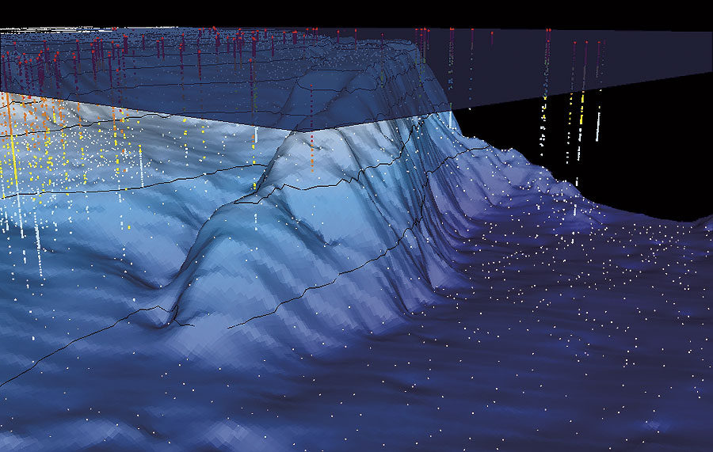

Marine GIS Developer
What it is: Building geospatial software applications and spatial databases to visualize and analyze oceanographic data.
What they do: Build interactive mapping applications for ocean data, design spatial databases to store marine survey data, integrate satellite/sonar data into visualization tools, develop routing algorithms for maritime navigation, and create dashboards for environmental monitoring.
CS Skills Used: Python (GeoPandas, GDAL), JavaScript (Leaflet, Mapbox), PostgreSQL/PostGIS for spatial databases, web development, spatial algorithms and indexing, RESTful APIs, and cartographic principles.
Background: CS degree plus 1-2 GIS courses or self-study (ArcGIS, QGIS). Marine knowledge helpful but can be learned on the job. Focus is on software development with spatial specialization.
Learn More: NOAA Ocean Mapping Story Map